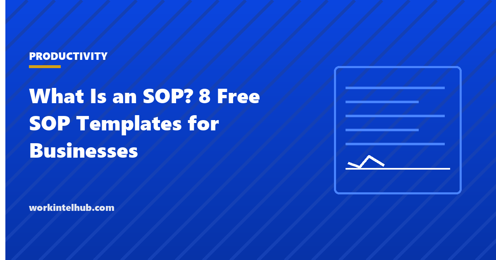

What Is an SOP? 8 Free SOP Templates for Businesses

A standard operating procedure (SOP) is a written instruction for doing a task the same way every time: what the task is, who does it, the steps in order, what good looks like, and what to do when something goes wrong. SOPs exist so that quality does not depend on who is on shift, so that a new person can do the job in week one, and so that when a regulator, an auditor or a customer asks how something is done, the answer is a document rather than a person's memory.
This guide covers when an SOP is worth writing, the sections every SOP needs, the eight formats and when each fits, and the mistakes that produce SOPs nobody follows. The templates include all eight formats with the standard header and revision history, an SOP register for a business, and a review tracker.
Download the templates
Free files: Word, Excel and PDF
Three files, free, no email required. Word to edit, Excel to track, PDF to print or share.
Templates open in Microsoft Word, Excel, Google Docs and Sheets, LibreOffice and any PDF reader. Free to use and adapt for your organisation.
What an SOP is, and when to write one
An SOP is worth writing when a task is repeated, when more than one person does it, when getting it wrong costs money, safety or compliance, or when a new person has to learn it. It is not worth writing for a task done once, by one person, with no consequence to variation; that is a note. A business of twenty people typically has thirty to sixty procedures that meet the test, and most have written down fewer than ten. The checklist templates cover the lighter form; an SOP adds purpose, scope, roles, the steps and what to do when a step fails.
The sections every SOP needs
| Section | What it answers |
|---|---|
| Purpose | Why this procedure exists and what it protects |
| Scope | What and who it covers, and what it does not |
| Roles | Who performs, who checks, who approves |
| Definitions and references | Terms, and the policies, regulations and SOPs it depends on |
| Procedure | The steps, in the format that fits (see below) |
| Expected results and failure handling | What good looks like at each step and what to do if it is not |
| Records | What is recorded, where, and for how long |
| Revision history | Version, date, change, author, approver |
Eight formats and when each fits
| Format | Use when |
|---|---|
| Standard SOP (step-by-step) | Linear procedures with numbered steps |
| Checklist SOP | Short procedures where order matters less than completeness |
| Flowchart SOP | Procedures with decisions and branches |
| Hierarchical SOP | Complex procedures with steps and sub-steps |
| Safety or compliance SOP | Procedures with hazards, PPE and regulatory references |
| Customer service SOP | Handling a request, complaint or escalation |
| IT or system SOP | Access, incident, backup and change procedures |
| Onboarding or training SOP | Teaching a procedure to a new person |
Writing SOPs people follow
- Write with the person who does the task, not for them; walk through it as they do it.
- One action per step, in the imperative: "Open the valve", not "the valve should be opened".
- Say what good looks like at each step; a procedure without expected results cannot be checked.
- Say what to do when it goes wrong; the failure path is where SOPs are actually needed.
- Keep it to the length the task needs; a two-page SOP for a five-minute task will not be read.
- Number, version and date every SOP, and keep the register current; an unversioned SOP is a rumour.
- Review on a schedule (annually is common) and whenever the process, the system or the regulation changes.
- Train people on it, record the training, and check competence; the training log in the workbook is the record auditors ask for.
Managing the set
The SOP register lists every procedure with its owner, version, effective date and review date, and flags the ones overdue. The training log records who has been trained on which SOP and when retraining is due. Together they are what ISO 9001, food safety, laboratory and healthcare audits expect to see, and they are useful well beyond regulated industries: a register of thirty current SOPs is the operations manual for a business, and the fastest onboarding document there is. The onboarding checklist points new starters to it; the roles and responsibilities templates define the owners.
Key takeaways
- An SOP is a versioned, owned instruction for doing a repeated task the same way; write one when variation costs money, safety, compliance or onboarding time.
- Every SOP has purpose, scope, roles, references, steps with expected results and failure handling, records and revision history.
- Pick the format for the task: step-by-step, checklist, flowchart, hierarchical, safety, customer service, IT or training.
- Keep a register with review dates and a training log; they are the operations manual and the audit evidence.
Frequently asked questions
What is an SOP?
A standard operating procedure: a written, versioned instruction for performing a repeated task consistently, stating its purpose, scope, the roles involved, the steps with expected results, what to do on failure, the records kept and the revision history. It is owned by a named person and reviewed on a schedule.
What is the difference between an SOP, a policy and a work instruction?
A policy states what the organisation requires and why; an SOP states how a process is carried out to meet it; a work instruction is the detailed, task-level how-to for one step, often with screenshots. Policies rarely change, SOPs change when the process does, work instructions change when the system does.
How long should an SOP be?
As long as the task needs and no longer. Most are one to four pages. If a procedure runs beyond that, split it into linked SOPs or use the hierarchical format with sub-steps.
Who should write an SOP?
The person who does the task, with the process owner, and approved by the manager responsible for the outcome. SOPs written by someone who has never done the task describe how it ought to work rather than how it does.
How often should SOPs be reviewed?
At least annually, and immediately when the process, the system, the equipment or the regulation changes, or after an incident. The register in the download tracks review dates and flags the overdue ones.